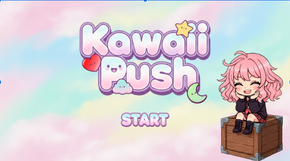
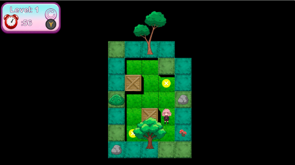
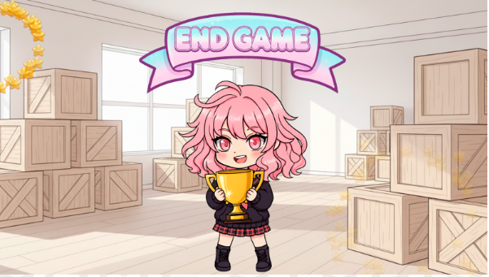

Kawaii Push - Puzzle Sokoban Relaxante

Sumário do Projeto e Regras de Negócio
Game Design Document (GDD): Kawaii Push
Visão Geral do Projeto (PUV):
Kawaii Push é um jogo tradicional de empurrar caixas (Sokoban) com uma estética fofa e minimalista. Projetado para ser uma experiência simples e relaxante, é voltado para jogadores casuais de todas as idades que buscam desafios mentais rápidos e satisfatórios.
Mínimo Produto Viável (MVP)
- Tela de Título com animações de entrada.
- 30 Fases progressivas divididas em 3 cenários temáticos.
- Sistema de Pause funcional com retenção de estado do cronômetro.
- Tela de Final de Jogo (Vitória/Derrota).
Controles do Jogador
- Movimentação: Teclado (Setas/WASD), Gamepad (D-Pad e Analógico Esquerdo).
- Reiniciar Fase: Botão Y (Gamepad ou Teclado).
- Pause/Confirmar: Enter (Teclado) ou Botão Start (Gamepad).
Progressão e Fluxo de Jogo
1. Inicialização e Telas
- Splash Screen: Exibição obrigatória da logo do estúdio por 3 segundos (Fade-in/Fade-out).
- Tela de Título: Animações coordenadas de logo, ícones (Estrela, Coração, Lua) e personagem com efeito de "Sine" vertical no botão Start.
- Sistema de Save: O jogo inicia automaticamente na última fase não concluída (Ex: parou na 5, inicia na 6).
2. Regras de Gameplay
- Contador de Tempo: 60 segundos por fase. Os controles e o tempo só ativam após 2 segundos de transição.
- Gestão do Pause: Ao pausar, o tempo congela imediatamente. O pause é desabilitado durante transições ou no tempo de espera inicial.
- Condição de Vitória: Empurrar todas as caixas para os locais indicados dentro do tempo.
- Condição de Derrota: Esgotamento do tempo (reinicia a fase atual).
3. Estrutura de Níveis
- Cenário 1: Fases 01 a 10.
- Cenário 2: Fases 11 a 20.
- Cenário 3: Fases 21 a 30.

Análise Técnica (Sistema de Transições)
A fluidez é prioridade: cada mudança de tela (Menu > Fase > Vitória) deve possuir transições suaves. O cronômetro de fase deve ser preciso, parando em 0 na derrota e fixando o tempo exato de conclusão na vitória para feedback ao jogador.
